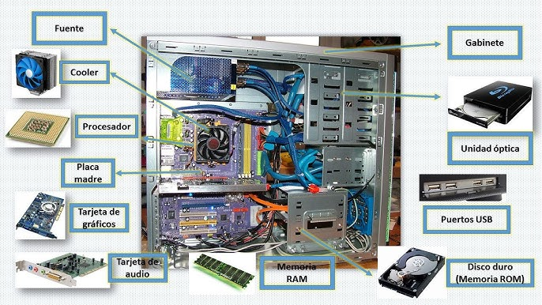
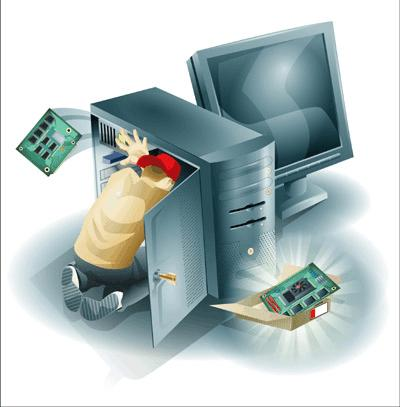

¿Qué aprenderás?
Identificar los componentes internos de un PC.

Aplicar medidas de seguridad antes de manipular hardware.
Ensamblar y poner en marcha una computadora funcional.

Realizar mantenimiento preventivo y diagnóstico básico.

En la actualidad, entender cómo funciona y se ensambla una computadora te brinda independencia tecnológica y te abre puertas laborales